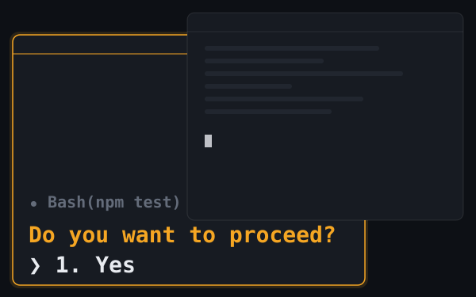
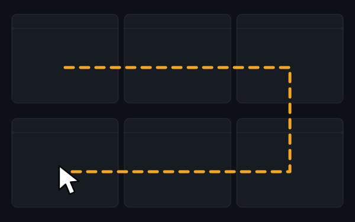
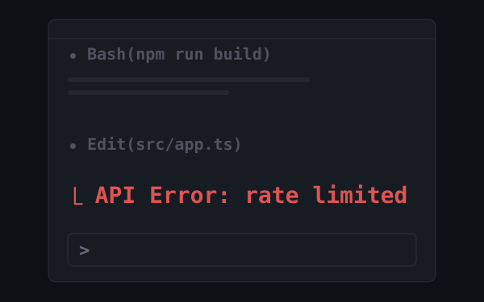
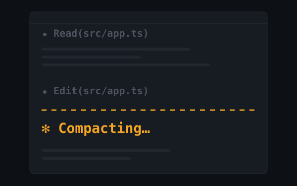
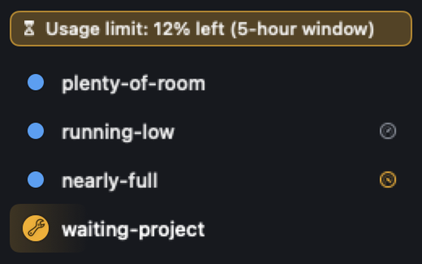
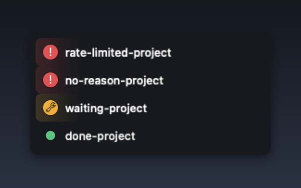

Tells you when a session is waiting.
One click to jump in.
brew install --cask umechanhika/tap/agent-manager
Sessions run in parallel.
Parallel dev: where the gap opens.

Claude sits on “proceed?” behind whatever you're doing.

You cycle through tabs just to see if anything stopped.

It died on an API error. You thought it was still running.

Context compacts mid-task, and the premise is gone.
AgentManager closes the gap.


Every session's status at a glance — which is running, which needs you, which is done.

A quick yes/no, a plan to review, or a choice to make — the status dot itself shows which, so you know what you're getting into before you jump in.

Appears the moment any session needs input. Hides when everything is clear.

Click any row to jump straight to that session — the exact pane in iTerm2, the right tab in Terminal and Ghostty, the project window in your IDE.

Toggle the window with ⌥ Space (customizable). Navigate sessions and jump to terminals — all without the mouse.

Sessions launched from the integrated terminal of Android Studio, VS Code, Cursor and more show up in the list too — click to jump to that project's window.

See how many sessions are waiting from the menu bar — without opening the window.

A percentage appears once a session passes 80% of its context, so you can wrap up before it auto-compacts. When your 5-hour or 7-day usage limit runs low, a banner shows what's left.

When a session dies on an API error — rate limit, auth, billing — the lamp turns red with a “!” and the window comes forward. Hover the row to see why.
A sound plays the moment a session needs you. Mute it anytime in Settings.
Cats live beneath your session list.
A small comfort between tasks.

A cat wanders the room in sync with your sessions. The scene shifts between day and night.

A cat meows the moment a session needs your input.
Free for up to 2 sessions shown at once.
Paid plans remove the limit.
Secure checkout by Freemius
* Cancel anytime.
macOS 13 Ventura or later, on Apple Silicon or Intel. Claude Code (claude CLI) must be installed.
Detection works in any terminal — it's powered by Claude Code hooks. What differs is how precisely a click can jump:
tmux sessions are detected and tracked, but jump is not supported yet.
Session detection needs no special permissions. Jumping depends on the destination: Automation permission for iTerm2 / Terminal / Ghostty (a dialog appears on your first jump — just click Allow), Accessibility for Android Studio and similar IDEs, and nothing at all for VS Code, Cursor, Zed, Warp, kitty, WezTerm, and Alacritty.
AgentManager uses Claude Code hooks to detect sessions. During onboarding, a hook is registered automatically in ~/.claude/settings.json (a .bak backup is created first) — after that, every claude session you start appears in the list with no further setup.
They stay marked as running until the last subagent finishes.
Your session data — prompts, file paths, session names — never leaves your Mac. AgentManager sends only anonymized crash reports and usage statistics, and even those never include paths, session names, or license keys.
There is no limit on the number of Macs per license. Install and activate AgentManager on as many machines as you like. Each Mac is activated individually, and you can deactivate a device anytime from Settings → License.
Updates are delivered automatically in-app — each one is cryptographically verified before install. The app itself is notarized by Apple.
Yes. You choose a view during onboarding, and you can switch anytime in Settings. All features work the same in both modes.